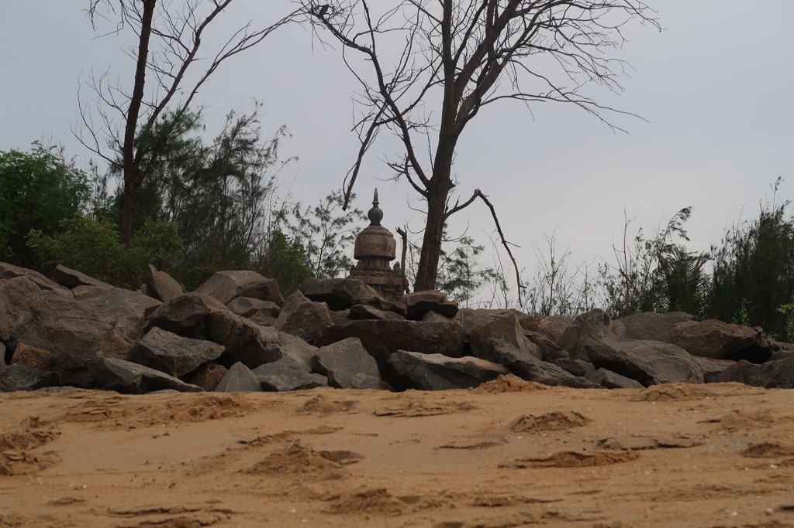
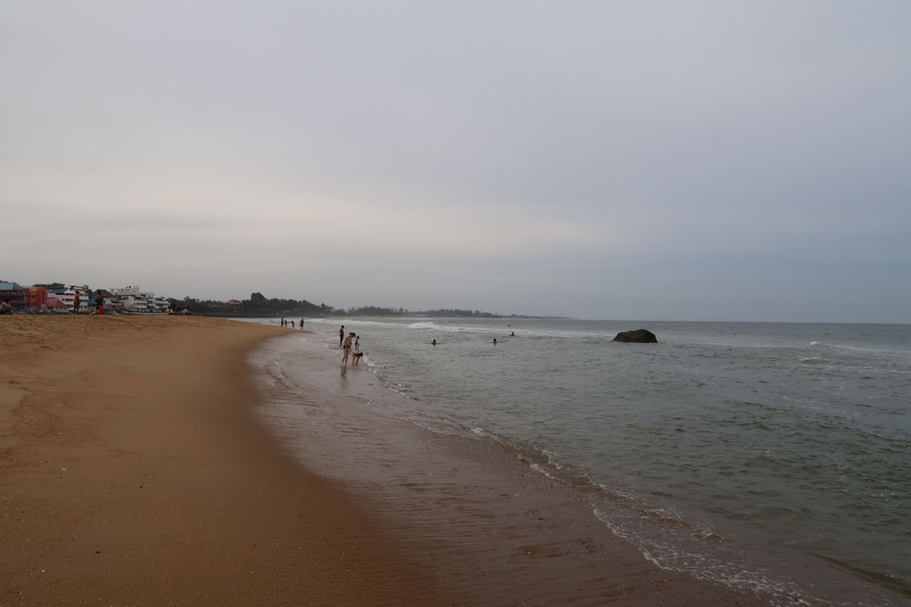

Tamil Nadu / Retour à Mahabalipuram
6h30 réveil
7h00 Checkout, on marche vers le “centre ville” pour attraper un bus de passage. Dix minutes plus tard c’est un bus VIDE qui s’arrête. Il va dans la bonne direction et ne se remplira jamais.
9h40 Arrivée à Chidanbaram, où on change de bus après avoir fait le plein de samosas.
10h00 Bus pour Pondy.
11h30 Arrivés à la gare routière de Pondy on cherche notre troisième bus. On se fait embarquer dans la version luxe, mais qui ne va pas bien vite.
14h00 Sommes enfin à Mahabalipuram. On prend un tuk tuk pour retourner à la guest house où nous logions il y a 3 semaines. On négocie le même prix.
14h30 Repas au Nautilus, fried rice, veg stuffed chapati, sodas x2, coca. 430 R
15h30 tour des boutiques pour compléter les cadeaux à ramener.
16H00 pause à l’hôtel, comptes et journal avant de retourner à la plage.
Baignade dans une eau chargée de limon et plutôt agitée. Dangereuse. Je ne peux pas lâcher les enfants.


17H30 Nous revenons à l’hôtel prendre une bonne douche. Nous ressortons faire un petit tour dans les boutiques de vêtements. G. se trouve un pantalon, les cols des chemises que je trouve ne me vont pas. Le bar sur la plage est fermé. On se promène dons dans les rues de la ville avant d’atterrir au milieu d’un meeting politique qui semble enflammé.
19h30 repas au Nautilus, fried noodles, fried rice, beer, coca x2, crepesx2 800R
21h50 dodo, ce coup ci le produit anti moustique indien fait bien son office.